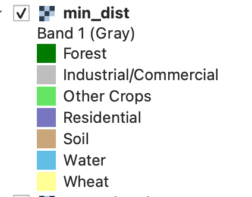

Part 2: Multi-spectral Image Classification
It is strongly recommended that you complete the following reading before continuing, with particular focus on the sections addressing supervised classification and more advanced approaches to image classification (i.e., decision trees).
Readings: Mather and Koch (2023), Chapter 7 Classification, Computer Processing of Remotely-Sensed Imagery.
Many supervised and unsupervised image classification methods exist. Unfortunately, no one method to image classification is universally better than other methods (although some will often perform well under many conditions) and an image classification exercise often involves experimenting with different techniques to determine optimal methods for a particular image data set and classification scheme.
Let's begin our image classification experimentation by running the minimum distance classification method on our Landsat 9 data set. Create a file called classification.py and copy the following script into it and then run the script (after modifying it as required).
classification.py
import os
import whitebox_workflows
wbe = whitebox_workflows.WbEnvironment('floating-license-ID') # Initialize Whitebox
try:
# declare your working directory as a variable
wbe.working_directory = "/path/to/lab/data" # BE SURE TO UPDATE THIS
assert(os.path.isdir(wbe.working_directory))
wbe.verbose = True # Let's print the output of each tool
# Read the 7 bands of data into a variable named 'band_data'
print('Reading band data...')
band_data = wbe.read_rasters(
'LC09_L1TP_018030_20220614_20220615_02_T1_B1.tif',
'LC09_L1TP_018030_20220614_20220615_02_T1_B2.tif',
'LC09_L1TP_018030_20220614_20220615_02_T1_B3.tif',
'LC09_L1TP_018030_20220614_20220615_02_T1_B4.tif',
'LC09_L1TP_018030_20220614_20220615_02_T1_B5.tif',
'LC09_L1TP_018030_20220614_20220615_02_T1_B6.tif',
'LC09_L1TP_018030_20220614_20220615_02_T1_B7.tif',
)
# Read in the training data
print('Reading training data...')
training_data = wbe.read_vector('training_data.shp')
# Perform a minimum-distance classification
print('Performing min-dist classification...')
min_dist = wbe.min_dist_classification(
input_rasters = band_data,
training_data = training_data,
class_field_name = 'CLASS',
dist_threshold = 3.0
)
# Save the output raster to disc
wbe.write_raster(min_dist, 'min_dist.tif', compress=True)
print("Operation complete!") # Provide some sort of indication that the job is done.
except Exception as e:
print(f"Exception: {e}")
finally:
print(wbe.check_in_license('floating-license-ID')) # Check your license back in.
When the script has completed, display min_dist.tif using QGIS.
2.1. Include a map of the min-dist classification for the Guelph and surroundings area. Use a colour scheme for your class map similar to the following. (1 mark)

Visually evaluate the accuracy of the classification by comparing the class map with the natural colour composite image. You may also wish to overlay an OpenStreetMaps layer for comparison, which is particularly useful for assessing how well water bodies, urban areas, and possibly forest (although there are temporal issue because of urban expansion and de/reforestation).
2.2. How well did the min-dist classification perform for mapping water bodies, urban areas (both residential and industrial/commercial), and forest? (3 marks)
Now modify the classification script above to use the parallelepiped classification method instead (you may just want to comment out the min-dist classification part above, in case you need to run it again):
# Perform a parallelepiped classification
print('Performing parallelipiped classification...')
parallelepiped = wbe.parallelepiped_classification(
input_rasters = band_data,
training_data = training_data,
class_field_name = 'CLASS'
)
# Save the output raster to disc
wbe.write_raster(parallelepiped, 'parallelepiped.tif', compress=True)
2.3. Include a map of the parallelepiped classification for same area around Guelph used above. (Hint if you zoom into your area of interest around Guelph, create a new vector, and digitize two points in opposing corners, you'll be able to zoom to extent and return to the same spatial extent whenever required; 1 mark)
Now modify the classification script to use the k-Nearest Neighbour (kNN) classification method:
# Perform a kNN classification
print('Performing kNN classification...')
knn = wbe.knn_classification(
input_rasters = band_data,
training_data = training_data,
class_field_name = 'CLASS',
scaling_method = "Standardize",
k = 5,
test_proportion = 0.2,
use_clipping = True,
create_output = True
)
# Save the output raster to disc
wbe.write_raster(knn, 'knn.tif', compress=True)
You'll notice that unlike with the min-dist and parallelepiped classifications, kNN outputs a measure of the accuracy of the classification. It does this by developing the classification model with a subset of the training data and setting aside a certain number of the training pixels (20% in our script above, test_proportion = 0.2) for evaluating the accuracy. The training data are randomly assigned to either training or testing groups and therefore the class map that is generated will be different each time (this also means that no two students should have the same class map and you shouldn't be concerned if you map is slightly different than that of the student next to you). The classification accuracy data will be reported at the terminal when you run your script.
2.4. What is the difference between the overall accuracy and the kappa index for classification assessment? (1 mark)
2.5. Describe how the kNN classification method works. What is the impact of increasing the value of
kto 8 or decreasingkto 1 on our classification model? (3 marks)2.6. Include a map of the kNN classification for same area around Guelph used above. (1 mark)
Now modify the classification script to use the random forest classification method:
# Perform a random forest classification
print('Performing random forest classification...')
rf = wbe.random_forest_classification(
input_rasters = band_data,
training_data = training_data,
class_field_name = 'CLASS',
split_criterion = "gini",
n_trees = 100,
min_samples_leaf = 1,
min_samples_split = 2,
test_proportion = 0.2,
create_output = True
)
# Save the output raster to disc
wbe.write_raster(rf, 'random_forest.tif', compress=True)
Random forest classification is the slowest-running of the classification methods that we're evaluating but often provides very good results. The processing time is greatly affected by the n_trees parameter (decreasing this will speed up the processing but may decrease the accuracy). Like kNN, random forest classification also outputs classification accuracy statistics.
2.7. Generally, the accuracy/kappa for the training data will be higher than the equivalent accuracy/kappa statistics for the test data. Why do you think this is? Which of the two groups of reported statistics (training or test) do you think is more important and why? (2 mark)
2.8. Include a map of the random forest classification for same area around Guelph used above. (1 mark)
2.9. Consider the reported 'Variable Permutation Importance'. Which band was found to be the most important for the classification and which was the least? Why might it be that a certain band may contribute very little to the classification model? (4 marks)
2.10. After inspecting each of the four classification maps, which of classification method do you feel performed the best for this data set and why? Provide example screenshots to illustrate your answer. (3 marks)